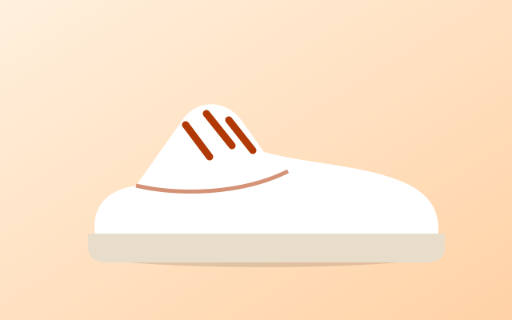
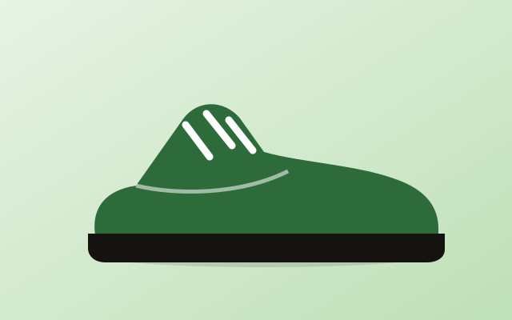
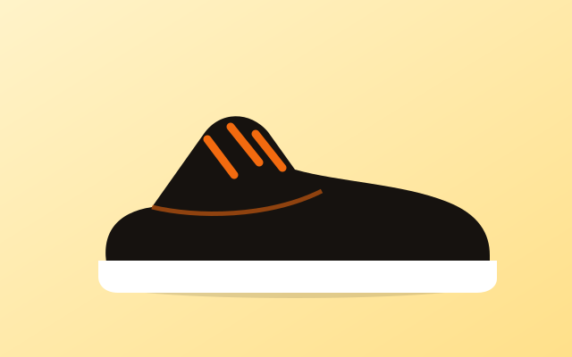

Latest articles
All
Care
Sizing
Guides
6 articles

CARE
How to clean white leather sneakers safely
Soft brush, mild soap and the one thing you should never put in the dryer.
Read more
SIZING
Finding your fit in UK sizes 6 to 11
Measure at the end of the day and leave a thumb of space at the toe.
Read more
GUIDES
Running vs lifestyle sneakers: what differs
Cushioning, weight and outsole grip explained in plain words.
Read more
SIZING
Five lacing patterns that fix fit problems
Heel slip, narrow toe box or high arch: there is a lacing fix for each.
Read more
CARE
How to store sneakers so they last longer
Shape, airflow and light: three simple rules for your shoe shelf.
Read more
GUIDES
Break in new sneakers in one week
A short plan that avoids blisters and sore heels.
Read moreCleaning methods compared
| Method | Best for | Time | Risk |
| Soft brush and soap | Leather, canvas | 10 min | Low |
| Magic eraser | Rubber soles | 5 min | Medium |
| Washing machine | Mesh running shoes | 40 min | High |
Questions readers ask
How often should I clean my sneakers?
A light brush after every few wears and a proper clean once a month is enough for most pairs.
Can I dry them in the sun?
Dry them in shade with newspaper inside. Direct sun can yellow white soles and crack leather.
Do insoles change my size?
Thick insoles can take half a size of room, so try them with the insole you plan to wear.